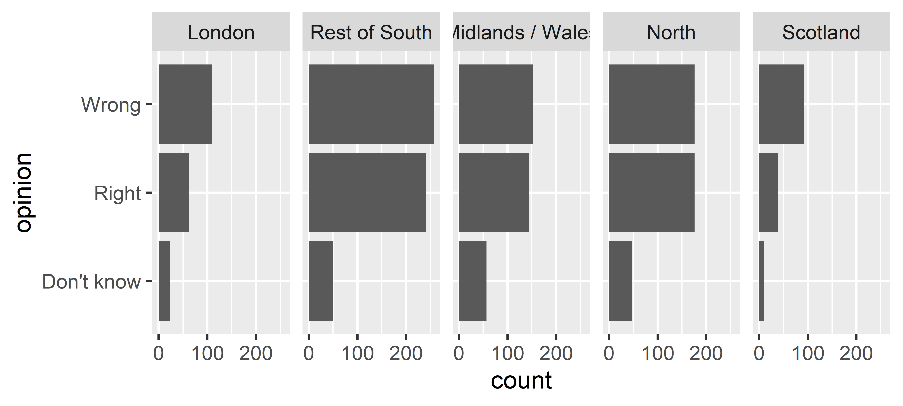
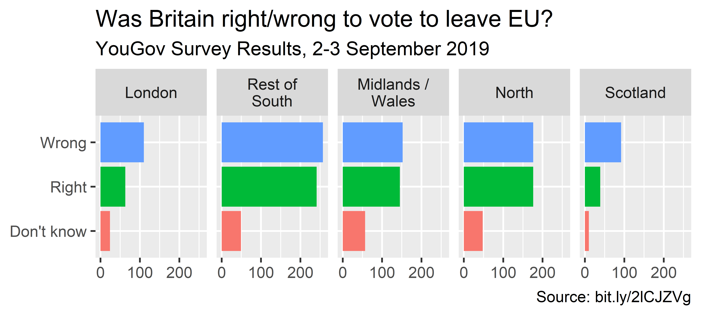

Tips for effective data visualization
Data Science in a Box
layout: true
class: middle
Designing effective visualizations
Keep it simple
.pull-left-narrow[] .pull-right-wide[]
Use color to draw attention
.pull-left[] .pull-right[]
Tell a story

.footnote[ Credit: Angela Zoss and Eric Monson, Duke DVS]
class: middle
Principles for effective visualizations
Principles for effective visualizations
- Order matters
- Put long categories on the y-axis
- Keep scales consistent
- Select meaningful colors
- Use meaningful and nonredundant labels
Data
In September 2019, YouGov survey asked 1,639 GB adults the following question:
.pull-left[ > In hindsight, do you think Britain was right/wrong to vote to leave EU? > >- Right to leave
>- Wrong to leave
>- Don’t know] .pull-right[]
.footnote[ Source: YouGov Survey Results, retrieved Oct 7, 2019]
class: middle
Order matters
Alphabetical order is rarely ideal
.panelset[]
Order by frequency
.panelset[]
Clean up labels
.panelset[]
Alphabetical order is rarely ideal
.panelset[]
Use inherent level order
.panelset[]
Clean up labels
.panelset[]
class: middle
Put long categories on the y-axis
Long categories can be hard to read

Move them to the y-axis
.panelset[]
And reverse the order of levels
.panelset[]
Clean up labels
.panelset[]
class: middle
Pick a purpose
Segmented bar plots can be hard to read
.panelset[]
Use facets
.panelset[]
Avoid redundancy?

Redundancy can help tell a story
.panelset[]
Be selective with redundancy
.panelset[]
Use informative labels
.panelset[]
A bit more info
.panelset[]
Let’s do better
.panelset[]
Fix up facet labels
.panelset[]
class: middle
Select meaningful colors
Rainbow colors not always the right choice

Manually choose colors when needed
.panelset[]
Choosing better colors
.center[.large[ colorbrewer2.org]]

Use better colors
.panelset[]
Select theme
.panelset[]
.your-turn[ ### .hand[Your turn!] .midi[ - RStudio Cloud > AE 07 - Brexit + Telling stories with dataviz > brexit.Rmd. - Change the visualisation in three different ways to tell slightly different stories with it each time.]]